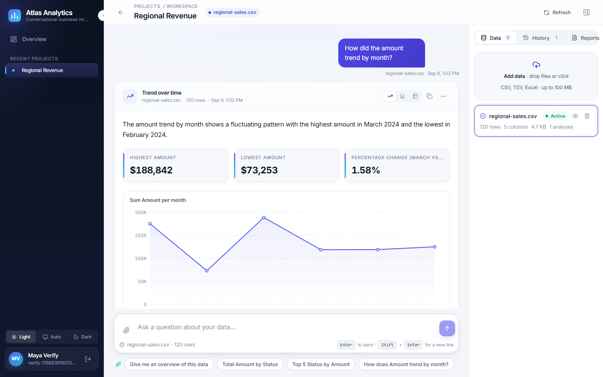
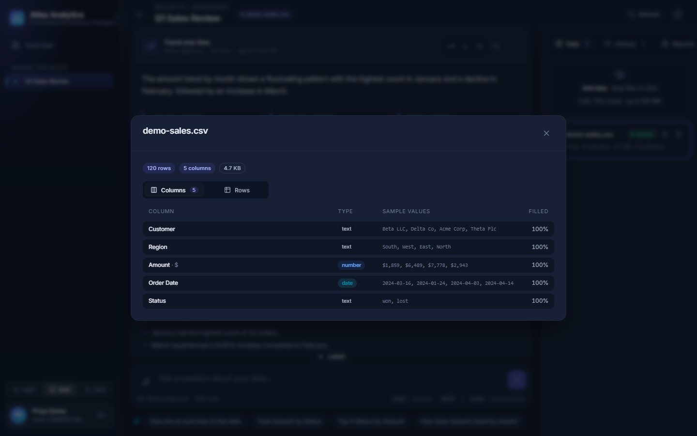
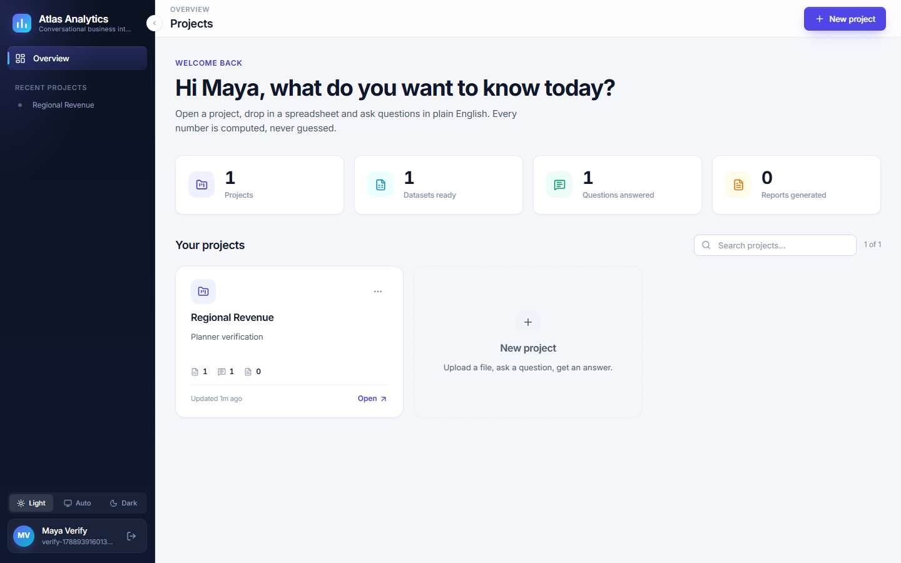

Atlas turns the spreadsheets you already have into a conversation. Ask a question in plain English and get verified numbers, a chart and a clear explanation in about a minute, then share it as a polished report.
No formulas No waiting for reports Numbers you can trust
The answers are in your data. Getting them out is slow.
Sales by branch, top customers, monthly trends: someone has to build them, and it happens at month end, if at all.
Pivot tables and formulas live with a single team member. When they are busy, decisions wait.
Chatbots produce confident numbers that are simply wrong. For business decisions that is worse than no answer.

A trend question answered: summary, key figures, chart, and the dataset panel on the right.
Atlas separates understanding from calculating. The AI reads your question; a deterministic calculation engine produces the numbers.
Every total, average, ranking and trend is computed directly from your rows by a maths engine. The AI is not allowed to produce figures.
Before you see the summary, every number in it is checked against the computed results. Anything that does not match is removed and flagged.
Values like “1,50,000”, “$4,100” or “12%” are read correctly. Blank or unreadable cells are excluded and you are told how many, with examples.
Each answer shows the exact operation, the columns used, the filters applied and how many rows were included. Nothing is hidden.
| You ask | You get |
|---|---|
| “What is in this file?” | Rows, columns, types, completeness and data-quality notes for every column |
| “Total sales by region” · “Average order value by product” | Key figures, bar chart, sortable table |
| “Top 10 customers by revenue” · “Lowest-selling items” | Ranked list with each item’s share of the total |
| “Monthly sales this year” · “Weekly orders” | Line chart with period-over-period change |
| “North vs South on average deal size” | Side-by-side values, difference and percentage change |
| “Breakdown of orders by status” · “Distribution of prices” | Frequency chart or histogram |

Every uploaded file is profiled: column types, sample values and completeness at a glance.

The overview: your projects, datasets, questions answered and reports at a glance.
Uploaded files are used only to answer your questions inside your workspace. They are never used to train models.
Every account is isolated. Sessions expire automatically and can be revoked on sign-out. All traffic is encrypted in transit.
Use our managed cloud, or run Atlas entirely on your own servers so data never leaves your network.
Each answer records the exact plan that produced it, so results can be reviewed and reproduced later.